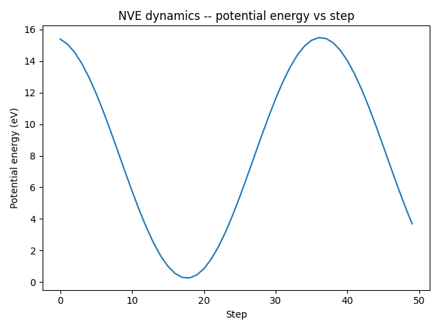

Note
Go to the end to download the full example code.
Getting started with TorchSim¶
This tutorial walks through running a short NVE molecular dynamics simulation with a metatomic model and TorchSim.
Prerequisites¶
Install the integration package and its dependencies:
pip install metatomic-torchsim
We start by importing the modules we need:
from typing import Dict, List, Optional
import ase.build
import torch
from metatensor.torch import Labels, TensorBlock, TensorMap
import metatomic.torch as mta
from metatomic_torchsim import MetatomicModel
Export a simple model¶
For this tutorial we create and export a minimal model that predicts energy as a (trivial) function of atomic positions. The energy must depend on positions so that forces can be computed via autograd. In practice you would use a pre-trained model loaded from a file.
class HarmonicEnergy(torch.nn.Module):
"""A minimal model: harmonic restraint around initial positions."""
def __init__(self, k: float = 0.1):
super().__init__()
self.k = k
def forward(
self,
systems: List[mta.System],
outputs: Dict[str, mta.ModelOutput],
selected_atoms: Optional[Labels] = None,
) -> Dict[str, TensorMap]:
energies: List[torch.Tensor] = []
for system in systems:
# energy = k * sum(positions^2) -- differentiable w.r.t. positions
e = self.k * torch.sum(system.positions**2)
energies.append(e.reshape(1, 1))
energy = torch.cat(energies, dim=0)
block = TensorBlock(
values=energy,
samples=Labels("system", torch.arange(len(systems)).reshape(-1, 1)),
components=[],
properties=Labels("energy", torch.tensor([[0]])),
)
return {
"energy": TensorMap(keys=Labels("_", torch.tensor([[0]])), blocks=[block])
}
Build an AtomisticModel wrapping the raw module:
raw_model = HarmonicEnergy(k=0.1)
capabilities = mta.ModelCapabilities(
length_unit="Angstrom",
atomic_types=[14], # Silicon
interaction_range=0.0,
outputs={"energy": mta.ModelOutput(unit="eV")},
supported_devices=["cpu"],
dtype="float64",
)
atomistic_model = mta.AtomisticModel(
raw_model.eval(), mta.ModelMetadata(), capabilities
)
Load the model¶
Wrap the model with MetatomicModel.
You can pass an AtomisticModel directly, or a path to a saved
.pt file:
model = MetatomicModel(atomistic_model, device="cpu")
The wrapper detects the model’s dtype and supported devices
automatically. Pass device="cuda" to run on GPU when available.
print("dtype:", model.dtype)
print("device:", model.device)
dtype: torch.float64
device: cpu
Build a simulation state¶
TorchSim works with SimState objects. Convert ASE Atoms using
torch_sim.initialize_state:
import torch_sim as ts # noqa: E402
atoms = ase.build.bulk("Si", "diamond", a=5.43, cubic=True)
sim_state = ts.initialize_state(atoms, device=model.device, dtype=model.dtype)
print("Number of atoms:", sim_state.n_atoms)
Number of atoms: 8
Evaluate the model¶
Call the model on the simulation state to get energies, forces, and stresses:
results = model(sim_state)
print("Energy:", results["energy"]) # shape [1]
print("Forces shape:", results["forces"].shape) # shape [n_atoms, 3]
print("Stress shape:", results["stress"].shape) # shape [1, 3, 3]
Energy: tensor([15.4796], dtype=torch.float64)
Forces shape: torch.Size([8, 3])
Stress shape: torch.Size([1, 3, 3])
Run NVE dynamics¶
Use TorchSim’s NVE (Velocity Verlet) integrator to run a short trajectory.
nve_init samples momenta from a Maxwell-Boltzmann distribution at the
given temperature, and nve_step advances by one timestep:
import matplotlib.pyplot as plt # noqa: E402
from torch_sim.integrators import nve_init, nve_step # noqa: E402
from torch_sim.units import MetalUnits # noqa: E402
sim_state = ts.initialize_state(atoms, device=model.device, dtype=model.dtype)
# Initialize NVE state with momenta at 300 K (in eV units)
kT = 300.0 * MetalUnits.temperature # kelvin -> eV
md_state = nve_init(sim_state, model, kT=kT)
energies = []
steps = []
dt = 1.0 # femtoseconds
for step in range(50):
md_state = nve_step(md_state, model, dt=dt)
energies.append(md_state.energy.sum().item())
steps.append(step)
plt.plot(steps, energies)
plt.xlabel("Step")
plt.ylabel("Potential energy (eV)")
plt.title("NVE dynamics -- potential energy vs step")
plt.tight_layout()
plt.show()

Note
With a real interatomic potential the total energy would stay approximately constant in an NVE simulation, which serves as a basic sanity check.
Next steps¶
Batched simulations with TorchSim explains running multiple systems at once
Total running time of the script: (0 minutes 0.338 seconds)